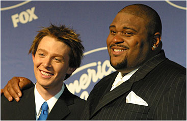
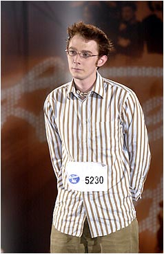
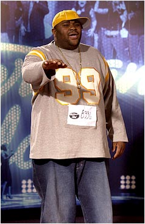
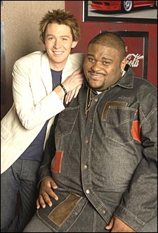
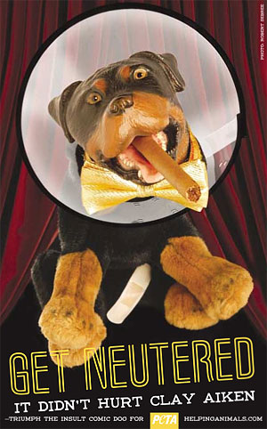

|
Clay AikenIt was really down to the wire for Spaghetti and the Meatball. Onstage, Clay Aiken and Ruben Studdard stood nervously side by side in a battle of the sexes: the two remaining vocalists on Fox's American Idol II. And what a fantastical competition it had been! All season long, audiences were subjected to all manner of disjointed sounds, strangled groans, high-sonic stilettos and trivial screeches with little or no actual weight. Flat, inflectionless dry-heaves, car alarms and repetitive dog barks warped by whiskey competed against squawky, would-be divas smothering even the simplest of lyrics with overarching vocal gymnastics in a desperate attempt to curry the favor of skeptical judges. People who watched the show at full volume regularly ran the risk of blindness and severe hearing impairment, and one by one only the "lesser" candidates were summarily dispatched without further opportunity to clear their clotted throats of rumbling phlegm. That is, if you suspended your disbelief long enough to pretend there was ever an actual gradation among the dwindling talent pool.Journalists and fans had been fawning over Aiken's likeable awkwardness and aw-shucks-gee-whiz candor for weeks. Entertainment reporters gushed about Aiken's lily-white appearance, his breezy approachability, and his modestly charming (yet humorously self-effacing) personality in such glowing terms that he seemed the only logical choice for a pop music franchise. Also in his favor was a spontaneous mid-season makeover: a cliched transformation from "geek to chic," performed with the laser precision of a battery of metrosexual stylists. His dirty brown tips were frosted bronzy-reddish-blonde and given a sharp, gelatinous spike. They took away his faggy collared shirts and replaced them with cotton crew necks and a pearly white Don Johnson blazer. Two colored contact lenses later, he was good to go. His opponent, Ruben "Sumo of Soul" Studdard, was a 350-pound African-American from Alabama. His health and well-being were constantly called into question, and the "fat factor" became an increasing priority with recording executive Clive Davis. "He sometimes can be terribly lethargic," one insider remarked. "He moves slow." Clive knew the dangers Ruben faced if he didn't get his weight in order. Throughout nearly every performance, Ruben mopped the flop sweat from his streaked cheeks and let loose with flying spit during a particularly wheezy rendition of Baby I Need Your Lovin'. Talk about your American Idle. You could put a red shirt on this guy and holler HEY, KOOL-AID. Let's get the inside scoop on Ruben from the scintillating interview available on his Web site. Q: Do you have a job? Needless to say, when Ruben actually won the show, whitey-white folks
from coast to coast just plain froze in disbelief, aghast and agog with
palpable racism. B-but Clay's so skinny! He's fresh-faced and cute! He belts
them out like a poor man's Rick Astley! Little girls sobbed. Clay's own
family screamed and cringed. Meanwhile, black folks reacted like they did to
the Simpson verdict: cheering, hugging one another, jumping up and down and
crying because they were just so happy. Fans flooded the FCC with clamoring
cries to investigate. So what happened?
What caused this tremendous upset? Jury rigging? Phone-vote tampering? Clay poked through the hole of glory on the ever popular asexual leprechaun ticket. He's a My Pretty Pony whose devout southern Baptist beliefs masquerade as mainstream pop music, and his album Measure of a Man suggests little more than a thumb and forefinger held two inches apart. People are too busy marveling at the wonders of a pint-sized pretty boy with an impossibly resonant singing voice to remember that Jim Neighbors (aka Gomer Pyle) falls well within the same category. Whenever either one opens his mouth to sing, stand back -- he's probably after your lucky charms. Aiken has tapped into an audience by and large ignored by the music industry: middle class, Pilates-loving Christian moms who can't handle references to sex, drugs or explicit content. On the cover of Rolling Stone, Aiken wore his trademarked, impish smirk and a What Would Jesus Do bracelet. Time magazine reports of Clay's ongoing struggle with RCA to keep his videos and music squeaky clean. But such a lad isn't completely impervious to scandal. People for the Ethical Treatment of Animals (PETA) wants Aiken to apologize for disparaging remarks he made about kitty cats during an interview with Rolling Stone. "I think cats are Satan," Aiken said. "There's nothing worse
to me than a house cat. When I was about sixteen, I had a kitten and ran over
it. Seeing that cat die, I actually think that its spirit has haunted me. I
wasn't afraid of cats before. But now they scare me to death." If Aiken posts a message on his Web site urging pet owners to spay or neuter
their animals, and he grants PETA an exclusive interview, the campaign
tagline will be substituted with Cut 'em off. They don't taste that great
anyway. |